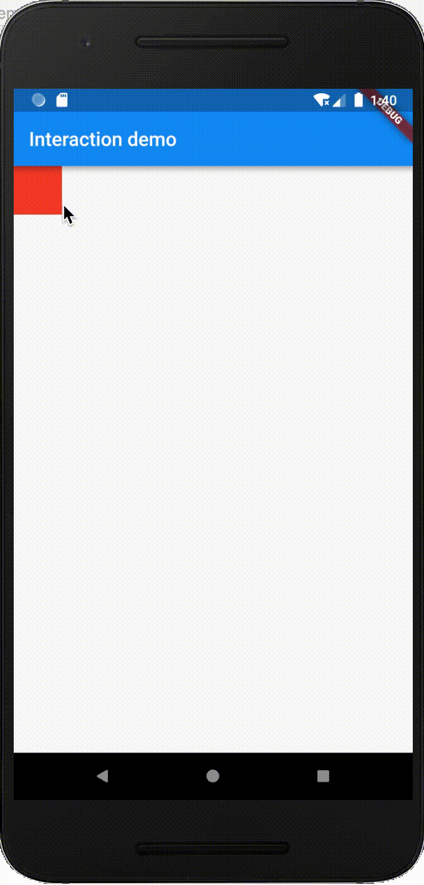
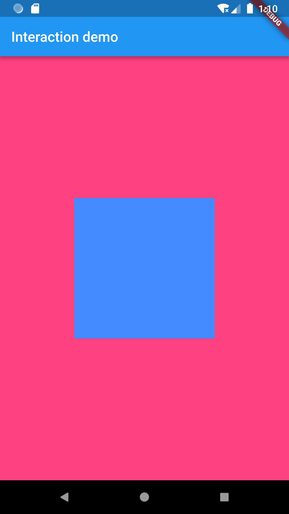

- 00 开篇词 为什么每一位大前端从业者都应该学习Flutter？.md.html
- 01 预习篇 · 从0开始搭建Flutter工程环境.md.html
- 02 预习篇 · Dart语言概览.md.html
- 03 深入理解跨平台方案的历史发展逻辑.md.html
- 04 Flutter区别于其他方案的关键技术是什么？.md.html
- 05 从标准模板入手，体会Flutter代码是如何运行在原生系统上的.md.html
- 06 基础语法与类型变量：Dart是如何表示信息的？.md.html
- 07 函数、类与运算符：Dart是如何处理信息的？.md.html
- 08 综合案例：掌握Dart核心特性.md.html
- 09 Widget，构建Flutter界面的基石.md.html
- 10 Widget中的State到底是什么？.md.html
- 11 提到生命周期，我们是在说什么？.md.html
- 12 经典控件（一）：文本、图片和按钮在Flutter中怎么用？.md.html
- 13 经典控件（二）：UITableView_ListView在Flutter中是什么？.md.html
- 14 经典布局：如何定义子控件在父容器中排版的位置？.md.html
- 15 组合与自绘，我该选用何种方式自定义Widget？.md.html
- 16 从夜间模式说起，如何定制不同风格的App主题？.md.html
- 17 依赖管理（一）：图片、配置和字体在Flutter中怎么用？.md.html
- 18 依赖管理（二）：第三方组件库在Flutter中要如何管理？.md.html
- 19 用户交互事件该如何响应？.md.html
- 20 关于跨组件传递数据，你只需要记住这三招.md.html
- 21 路由与导航，Flutter是这样实现页面切换的.md.html
- 22 如何构造炫酷的动画效果？.md.html
- 23 单线程模型怎么保证UI运行流畅？.md.html
- 24 HTTP网络编程与JSON解析.md.html
- 25 本地存储与数据库的使用和优化.md.html
- 26 如何在Dart层兼容Android_iOS平台特定实现？（一）.md.html
- 27 如何在Dart层兼容Android_iOS平台特定实现？（二）.md.html
- 28 如何在原生应用中混编Flutter工程？.md.html
- 29 混合开发，该用何种方案管理导航栈？.md.html
- 30 为什么需要做状态管理，怎么做？.md.html
- 31 如何实现原生推送能力？.md.html
- 32 适配国际化，除了多语言我们还需要注意什么_.md.html
- 33 如何适配不同分辨率的手机屏幕？.md.html
- 34 如何理解Flutter的编译模式？.md.html
- 35 Hot Reload是怎么做到的？.md.html
- 36 如何通过工具链优化开发调试效率？.md.html
- 37 如何检测并优化Flutter App的整体性能表现？.md.html
- 38 如何通过自动化测试提高交付质量？.md.html
- 39 线上出现问题，该如何做好异常捕获与信息采集？.md.html
- 40 衡量Flutter App线上质量，我们需要关注这三个指标.md.html
- 41 组件化和平台化，该如何组织合理稳定的Flutter工程结构？.md.html
- 42 如何构建高效的Flutter App打包发布环境？.md.html
- 43 如何构建自己的Flutter混合开发框架（一）？.md.html
- 44 如何构建自己的Flutter混合开发框架（二）？.md.html
- 特别放送 温故而知新，与你说说专栏的那些思考题.md.html
- 结束语 勿畏难，勿轻略.md.html
- 捐赠
19 用户交互事件该如何响应？
你好，我是陈航。今天，我和你分享的主题是，如何响应用户交互事件。
在前面两篇文章中，我和你一起学习了Flutter依赖的包管理机制。在Flutter中，包是包含了外部依赖的功能抽象。对于资源和工程代码依赖，我们采用包配置文件pubspec.yaml进行统一管理。
通过前面几个章节的学习，我们已经掌握了如何在Flutter中通过内部实现和外部依赖去实现自定义UI，完善业务逻辑。但除了按钮和ListView这些动态的组件之外，我们还无法响应用户交互行为。那今天的分享中，我就着重与你讲述Flutter是如何监听和响应用户的手势操作的。
手势操作在Flutter中分为两类：
- 第一类是原始的指针事件（Pointer Event），即原生开发中常见的触摸事件，表示屏幕上触摸（或鼠标、手写笔）行为触发的位移行为；
- 第二类则是手势识别（Gesture Detector），表示多个原始指针事件的组合操作，如点击、双击、长按等，是指针事件的语义化封装。
接下来，我们先看一下原始的指针事件。
指针事件
指针事件表示用户交互的原始触摸数据，如手指接触屏幕PointerDownEvent、手指在屏幕上移动PointerMoveEvent、手指抬起PointerUpEvent，以及触摸取消PointerCancelEvent，这与原生系统的底层触摸事件抽象是一致的。
在手指接触屏幕，触摸事件发起时，Flutter会确定手指与屏幕发生接触的位置上究竟有哪些组件，并将触摸事件交给最内层的组件去响应。与浏览器中的事件冒泡机制类似，事件会从这个最内层的组件开始，沿着组件树向根节点向上冒泡分发。
不过Flutter无法像浏览器冒泡那样取消或者停止事件进一步分发，我们只能通过hitTestBehavior去调整组件在命中测试期内应该如何表现，比如把触摸事件交给子组件，或者交给其视图层级之下的组件去响应。
关于组件层面的原始指针事件的监听，Flutter提供了Listener Widget，可以监听其子Widget的原始指针事件。
现在，我们一起看一个Listener的案例。我定义了一个宽度为300的红色正方形Container，利用Listener监听其内部Down、Move及Up事件：
Listener(
child: Container(
color: Colors.red,//背景色红色
width: 300,
height: 300,
),
onPointerDown: (event) => print("down $event"),//手势按下回调
onPointerMove: (event) => print("move $event"),//手势移动回调
onPointerUp: (event) => print("up $event"),//手势抬起回调
);
我们试着在红色正方形区域内进行触摸点击、移动、抬起，可以看到Listener监听到了一系列原始指针事件，并打印出了这些事件的位置信息：
I/flutter (13829): up PointerUpEvent(Offset(97.7, 287.7))
I/flutter (13829): down PointerDownEvent(Offset(150.8, 313.4))
I/flutter (13829): move PointerMoveEvent(Offset(152.0, 313.4))
I/flutter (13829): move PointerMoveEvent(Offset(154.6, 313.4))
I/flutter (13829): up PointerUpEvent(Offset(157.1, 312.3))
手势识别
使用Listener可以直接监听指针事件。不过指针事件毕竟太原始了，如果我们想要获取更多的触摸事件细节，比如判断用户是否正在拖拽控件，直接使用指针事件的话就会非常复杂。
通常情况下，响应用户交互行为的话，我们会使用封装了手势语义操作的Gesture，如点击onTap、双击onDoubleTap、长按onLongPress、拖拽onPanUpdate、缩放onScaleUpdate等。另外，Gesture可以支持同时分发多个手势交互行为，意味着我们可以通过Gesture同时监听多个事件。
Gesture是手势语义的抽象，而如果我们想从组件层监听手势，则需要使用GestureDetector。GestureDetector是一个处理各种高级用户触摸行为的Widget，与Listener一样，也是一个功能性组件。
接下来，我们通过一个案例来看看GestureDetector的用法。
我定义了一个Stack层叠布局，使用Positioned组件将1个红色的Container放置在左上角，并同时监听点击、双击、长按和拖拽事件。在拖拽事件的回调方法中，我们更新了Container的位置：
//红色container坐标
double _top = 0.0;
double _left = 0.0;
Stack(//使用Stack组件去叠加视图，便于直接控制视图坐标
children: <Widget>[
Positioned(
top: _top,
left: _left,
child: GestureDetector(//手势识别
child: Container(color: Colors.red,width: 50,height: 50),//红色子视图
onTap: ()=>print("Tap"),//点击回调
onDoubleTap: ()=>print("Double Tap"),//双击回调
onLongPress: ()=>print("Long Press"),//长按回调
onPanUpdate: (e) {//拖动回调
setState(() {
//更新位置
_left += e.delta.dx;
_top += e.delta.dy;
});
},
),
)
],
);
运行这段代码，并查看控制台输出，可以看到，红色的Container除了可以响应我们的拖拽行为外，还能够同时响应点击、双击、长按这些事件。

图1 GestureDetector示例
尽管在上面的例子中，我们对一个Widget同时监听了多个手势事件，但最终只会有一个手势能够得到本次事件的处理权。对于多个手势的识别，Flutter引入了手势竞技场（Arena）的概念，用来识别究竟哪个手势可以响应用户事件。手势竞技场会考虑用户触摸屏幕的时长、位移以及拖动方向，来确定最终手势。
那手势竞技场具体是怎么实现的呢？
实际上，GestureDetector内部对每一个手势都建立了一个工厂类（Gesture Factory）。而工厂类的内部会使用手势识别类（GestureRecognizer），来确定当前处理的手势。
而所有手势的工厂类都会被交给RawGestureDetector类，以完成监测手势的大量工作：使用Listener监听原始指针事件，并在状态改变时把信息同步给所有的手势识别器，然后这些手势会在竞技场决定最后由谁来响应用户事件。
有些时候我们可能会在应用中给多个视图注册同类型的手势监听器，比如微博的信息流列表中的微博，点击不同区域会有不同的响应：点击头像会进入用户个人主页，点击图片会进入查看大图页面，点击其他部分会进入微博详情页等。
像这样的手势识别发生在多个存在父子关系的视图时，手势竞技场会一并检查父视图和子视图的手势，并且通常最终会确认由子视图来响应事件。而这也是合乎常理的：从视觉效果上看，子视图的视图层级位于父视图之上，相当于对其进行了遮挡，因此从事件处理上看，子视图自然是事件响应的第一责任人。
在下面的示例中，我定义了两个嵌套的Container容器，分别加入了点击识别事件：
GestureDetector(
onTap: () => print('Parent tapped'),//父视图的点击回调
child: Container(
color: Colors.pinkAccent,
child: Center(
child: GestureDetector(
onTap: () => print('Child tapped'),//子视图的点击回调
child: Container(
color: Colors.blueAccent,
width: 200.0,
height: 200.0,
),
),
),
),
);
运行这段代码，然后在蓝色区域进行点击，可以发现：尽管父容器也监听了点击事件，但Flutter只响应了子容器的点击事件。
I/flutter (16188): Child tapped

图2 父子嵌套GestureDetector示例
为了让父容器也能接收到手势，我们需要同时使用RawGestureDetector和GestureFactory，来改变竞技场决定由谁来响应用户事件的结果。
在此之前，我们还需要自定义一个手势识别器，让这个识别器在竞技场被PK失败时，能够再把自己重新添加回来，以便接下来还能继续去响应用户事件。
在下面的代码中，我定义了一个继承自点击手势识别器TapGestureRecognizer的类，并重写了其rejectGesture方法，手动地把自己又复活了：
class MultipleTapGestureRecognizer extends TapGestureRecognizer {
@override
void rejectGesture(int pointer) {
acceptGesture(pointer);
}
}
接下来，我们需要将手势识别器和其工厂类传递给RawGestureDetector，以便用户产生手势交互事件时能够立刻找到对应的识别方法。事实上，RawGestureDetector的初始化函数所做的配置工作，就是定义不同手势识别器和其工厂类的映射关系。
这里，由于我们只需要处理点击事件，所以只配置一个识别器即可。工厂类的初始化采用GestureRecognizerFactoryWithHandlers函数完成，这个函数提供了手势识别对象创建，以及对应的初始化入口。
在下面的代码中，我们完成了自定义手势识别器的创建，并设置了点击事件回调方法。需要注意的是，由于我们只需要在父容器监听子容器的点击事件，所以只需要将父容器用RawGestureDetector包装起来就可以了，而子容器保持不变：
RawGestureDetector(//自己构造父Widget的手势识别映射关系
gestures: {
//建立多手势识别器与手势识别工厂类的映射关系，从而返回可以响应该手势的recognizer
MultipleTapGestureRecognizer: GestureRecognizerFactoryWithHandlers<
MultipleTapGestureRecognizer>(
() => MultipleTapGestureRecognizer(),
(MultipleTapGestureRecognizer instance) {
instance.onTap = () => print('parent tapped ');//点击回调
},
)
},
child: Container(
color: Colors.pinkAccent,
child: Center(
child: GestureDetector(//子视图可以继续使用GestureDetector
onTap: () => print('Child tapped'),
child: Container(...),
),
),
),
);
运行一下这段代码，我们可以看到，当点击蓝色容器时，其父容器也收到了Tap事件。
I/flutter (16188): Child tapped
I/flutter (16188): parent tapped
总结
好了，今天的分享就到这里。我们来简单回顾下Flutter是如何响应用户事件的。
首先，我们了解了Flutter底层原始指针事件，以及对应的监听方式和冒泡分发机制。
然后，我们学习了封装了底层指针事件手势语义的Gesture，了解了多个手势的识别方法，以及其同时支持多个手势交互的能力。
最后，我与你介绍了Gesture的事件处理机制：在Flutter中，尽管我们可以对一个Widget监听多个手势，或是对多个Widget监听同一个手势，但Flutter会使用手势竞技场来进行各个手势的PK，以保证最终只会有一个手势能够响应用户行为。如果我们希望同时能有多个手势去响应用户行为，需要去自定义手势，利用RawGestureDetector和手势工厂类，在竞技场PK失败时，手动把它复活。
在处理多个手势识别场景，很容易出现手势冲突的问题。比如，当需要对图片进行点击、长按、旋转、缩放、拖动等操作的时候，如何识别用户当前是点击还是长按，是旋转还是缩放。如果想要精确地处理复杂交互手势，我们势必需要介入手势识别过程，解决异常。
不过需要注意的是，冲突的只是手势的语义化识别过程，原始指针事件是不会冲突的。所以，在遇到复杂的冲突场景通过手势很难搞定时，我们也可以通过Listener直接识别原始指针事件，从而解决手势识别的冲突。
我把今天分享所涉及到的事件处理demo放到了GitHub上，你可以下载下来自己运行，进一步巩固学习效果。
思考题
最后，我给你留下两个思考题吧。
- 对于一个父容器中存在按钮FlatButton的界面，在父容器使用GestureDetector监听了onTap事件的情况下，如果我们点击按钮，父容器的点击事件会被识别吗，为什么？
- 如果监听的是onDoubleTap事件，在按钮上双击，父容器的双击事件会被识别吗，为什么？
欢迎你在评论区给我留言分享你的观点，我会在下一篇文章中等待你！感谢你的收听，也欢迎你把这篇文章分享给更多的朋友一起阅读。
© 2019 - 2023 Liangliang Lee. Powered by gin and hexo-theme-book.